EE1021 Programming for Engineers · Lecture 9 · 2026–2027
Part 1 · Arrays
np.array, np.arange, and np.linspacePart 2 · Line plots
plt.subplots() and ax.plot(x, y)Part 3 · More views
Today: a NumPy array does this in one line: amps = volts / 100
In the VS Code terminal:
At the top of the program:
package code written by other people. NumPy and Matplotlib are not in the Python download.
install run this command one time on each computer. On macOS, write python3.
import write these two lines in every program that uses the packages
as np gives a short name: we write np.array, not numpy.array
NumPy: arrays and fast math. Matplotlib: plots. Lecture 11 covers NumPy in detail.
volts = np.array([0, 2, 4, 6])
amps = volts / 100
watts = volts * amps
print(amps)
print(volts * 2)
print(watts)Output:
np.array(...) makes an array from a list
/ 100 divides every element. The result is a new array with the same length.
* 2 multiplies every element. It does not repeat the array.
array * array of the same length: first with first, second with second, … Here: power = voltage × current.
a printed array has no commas. A printed list has commas.
Math with an array is done element by element, without a loop.
arange and linspace Make Evenly Spaced Valuesarange np.arange(start, stop, step) works like range: the stop value is not in the array
the step can be a decimal number. range accepts only integers.
linspace np.linspace(start, stop, number): you give the number of points. The stop value is in the array.
You know the step: use arange. You know the number of points: use linspace.
>>> watts = np.array([1, 4, 9])
>>> np.sqrt(watts * 100)
array([10., 20., 30.])
>>> np.pi
3.141592653589793| name | meaning |
|---|---|
np.sqrt(x) |
square root of every element |
np.sin(x), np.cos(x) |
sine, cosine; x is in radians |
np.exp(x) |
e to the power of every element |
np.pi |
the number π |
V = √(P · R) for three power values in one line. R is 100 ohm.
math.sqrt takes one number. With an array it raises a TypeError. With arrays, use the np. functions.
a sine wave with frequency f, at the times in the array t: np.sin(2 * np.pi * f * t)
a = np.arange(1, 4) # line A
b = np.linspace(0, 10, 3) # line B
c = a * 10 + 5 # line C
d = a + a # line DWrite the values in each array.
a [1 2 3]
b [ 0. 5. 10.]
c [15 25 35]
d [2 4 6]
Why: line A: the stop value 4 is not in the array. Line B: 3 points, and the stop value 10 is in the array. Line D: + adds element by element. With two lists, + joins the lists.
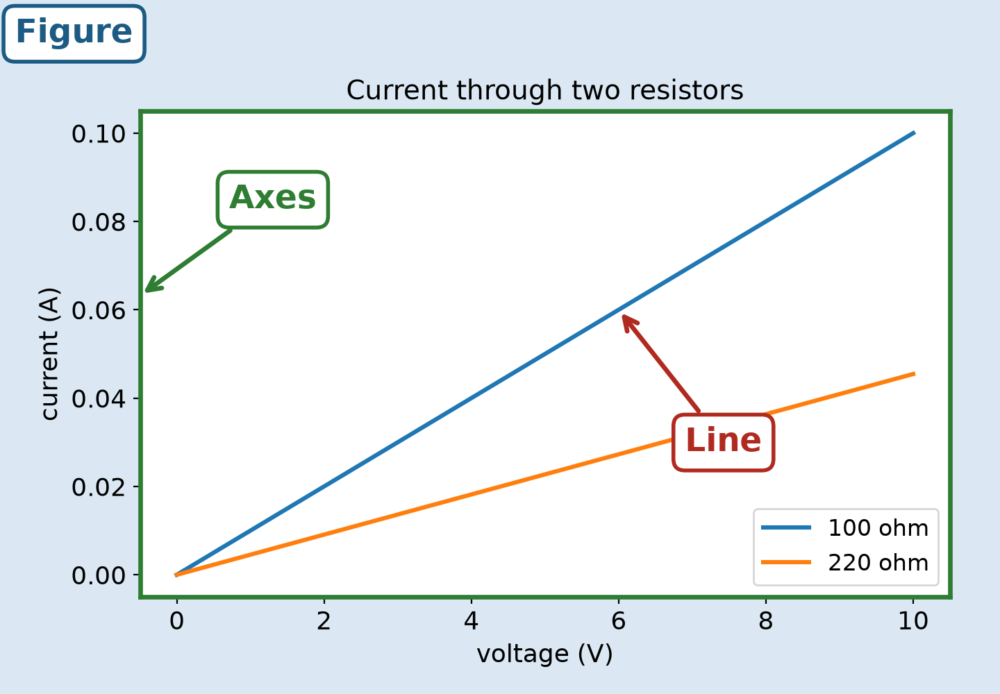
Figure the whole picture: one window, or one image file
Axes one drawing area with an x axis and a y axis. A figure can hold several axes.
Line the data, drawn in an axes. An axes can hold several lines.
They are objects (Lecture 7): ax.plot(...) and fig.savefig(...) are method calls
Axes is one drawing area. Axis is one direction: the x axis, the y axis.
subplots, plot, showimport numpy as np
import matplotlib.pyplot as plt
volts = np.arange(0, 11)
amps = volts / 100
fig, ax = plt.subplots()
ax.plot(volts, amps)
plt.show()the data: 0, 1, …, 10 V, and the current through a 100 ohm resistor. Two arrays with the same length.
plt.subplots() creates a figure with one axes. It returns two objects. We name them fig and ax.
ax.plot(x, y): the x values first, then the y values. It adds one line to the axes.
plt.show() opens the window with the figure. The program waits at this line until you close the window.
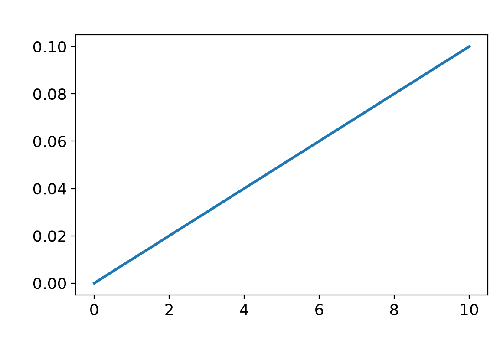
Without plt.show(), no window opens.
t = np.linspace(0, 0.04, 9)
volts = 5 * np.sin(2 * np.pi * 50 * t)
fig, ax = plt.subplots()
ax.plot(t, volts, marker="o")
plt.show()a sine wave: amplitude 5 V, frequency 50 Hz. t goes from 0 to 0.04 s: two periods.
marker="o" draws a circle at each point. Matplotlib joins the points with straight lines.
9 points are too few: the sine wave looks like a triangle wave
change 9 to 200 and delete the marker: the curve looks smooth
For a smooth curve, use 100 points or more.
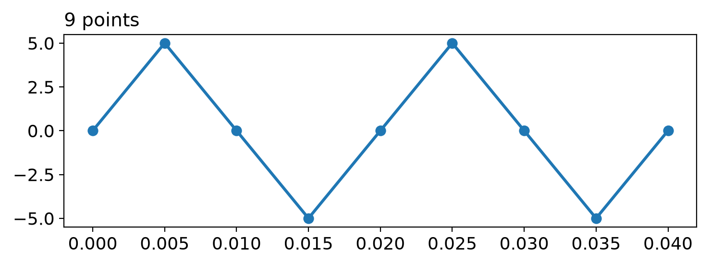
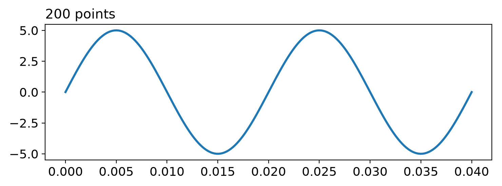
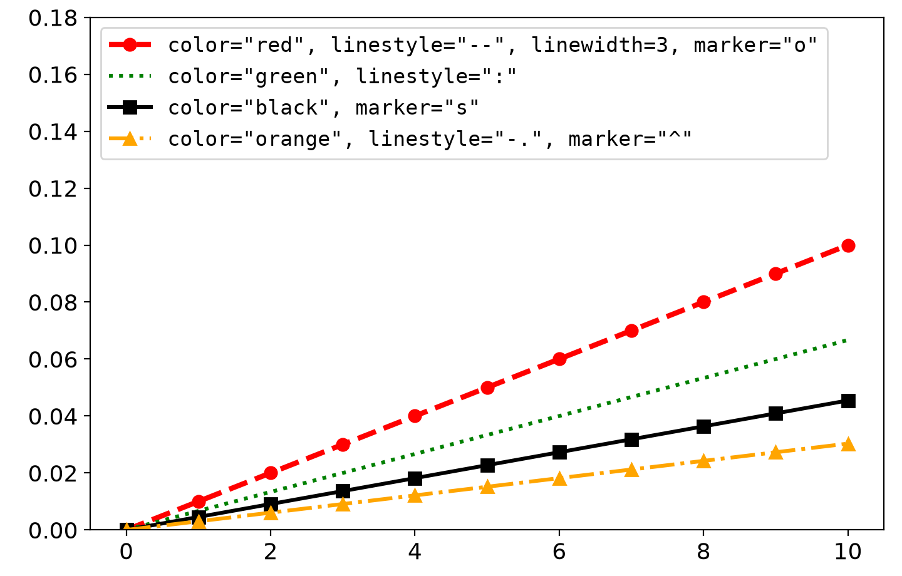
color a name: "red", "green", "black", "orange", "blue"
linestyle "-" solid, "--" dashed, ":" dotted, "-." dash-dot
marker "o" circle, "s" square, "^" triangle, "x" cross
linewidth a number. The default value is 1.5.
short forms: ls="--", lw=3, color="r"
plot Call Adds a Line; legend Names Themvolts = np.arange(0, 11)
amps_100 = volts / 100
amps_220 = volts / 220
fig, ax = plt.subplots()
ax.plot(volts, amps_100, label="100 ohm")
ax.plot(volts, amps_220, label="220 ohm")
ax.legend()
plt.show()two plot calls on the same ax: two lines in one axes. Matplotlib chooses the colors: blue first, then orange.
label="..." gives each line a name. The name is not in the figure yet.
ax.legend() draws the box with the names. Without this call, the figure has no box.
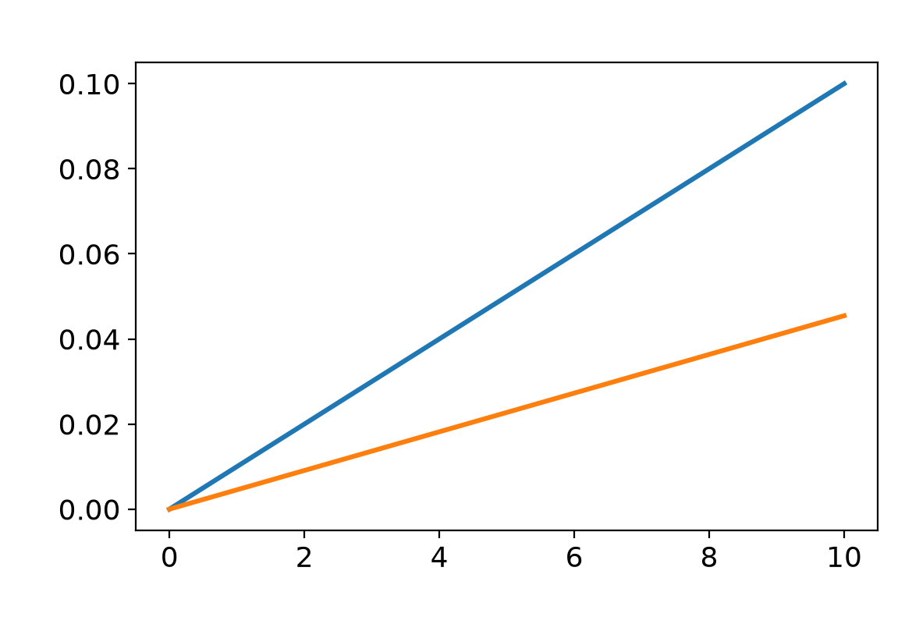
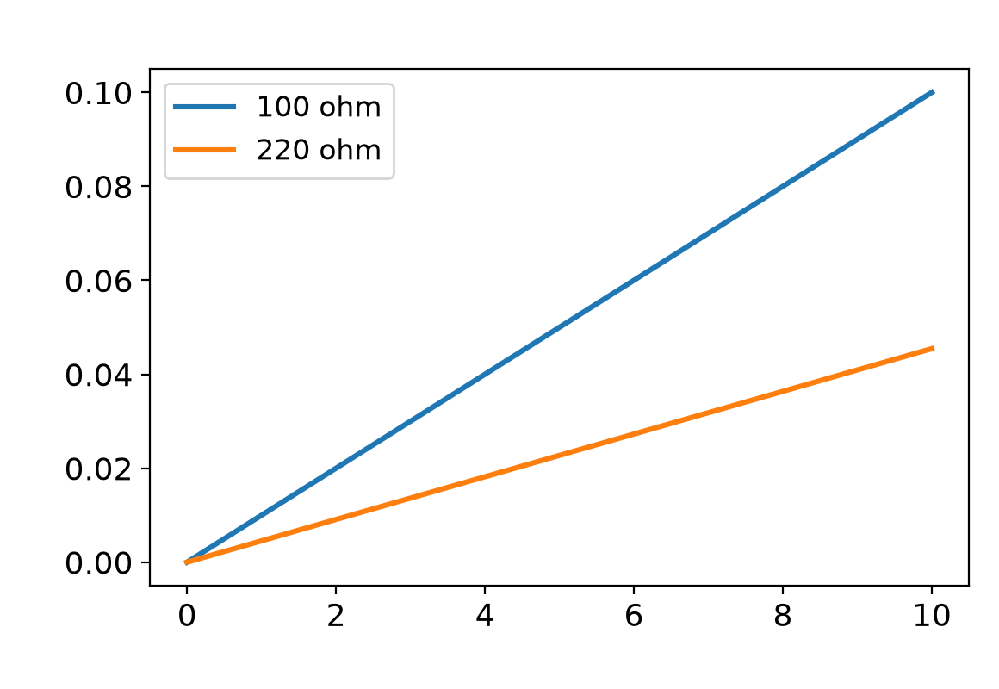
fig, ax = plt.subplots()
ax.plot(volts, amps_100, label="100 ohm")
ax.plot(volts, amps_220, label="220 ohm")
ax.legend()
ax.set_title("Current through two resistors")
ax.set_xlabel("voltage (V)")
ax.set_ylabel("current (A)")
ax.grid(True)
plt.show()set_title: one line of text above the axes. It says what the plot shows.
set_xlabel, set_ylabel: the quantity and the unit of each axis
grid(True): lines at the tick values. Now a value is easy to read: 4 V gives 0.04 A in the 100 ohm resistor.
Matplotlib chooses the axis limits from the data. To set them: ax.set_xlim(0, 10), ax.set_ylim(0, 0.12).
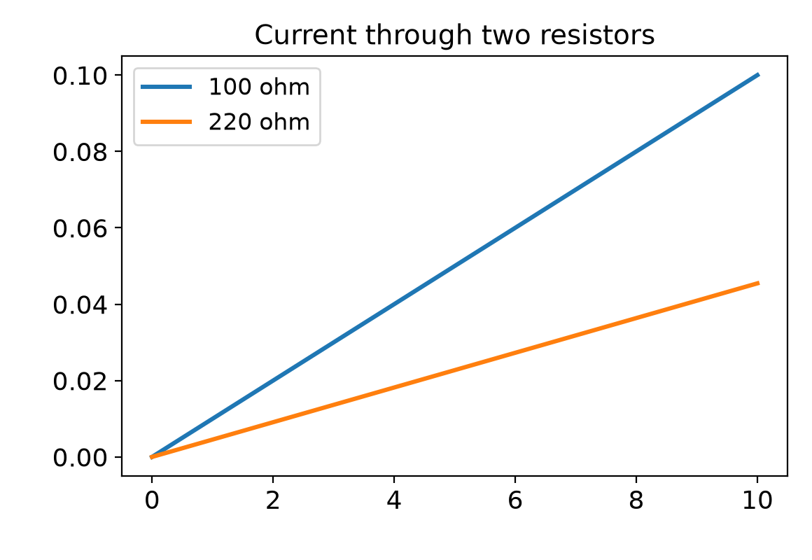
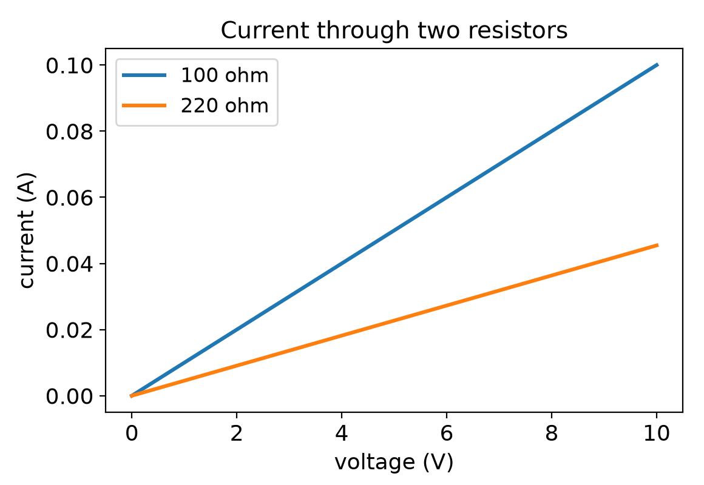
Every axis needs a name and a unit.
x = np.arange(0, 5)
fig, ax = plt.subplots()
ax.plot(x, x ** 2, marker="s", label="square")
ax.plot(x, 2 * x, linestyle=":")
ax.set_xlabel("x")
plt.show()1 2 2 5
3 No 4 16
Why: 2: x has 5 values: 0, 1, 2, 3, 4. 3: line 4 has a label, but the code never calls ax.legend(). 4: 4 ** 2 = 16.
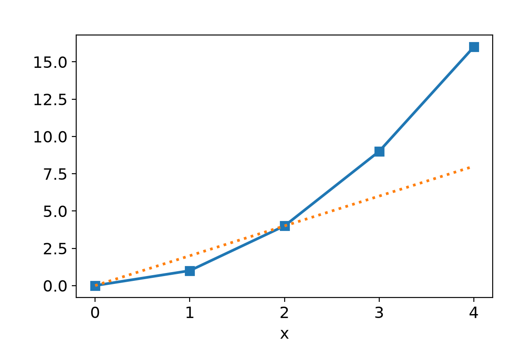
f = np.linspace(10, 100000, 10000)
gain = 1 / np.sqrt(1 + (f / 1000) ** 2)
fig, ax = plt.subplots()
ax.plot(f, gain)
ax.set_xlabel("frequency (Hz)")
ax.set_ylabel("gain")
ax.grid(True)
plt.show()frequencies from 10 Hz to 100 000 Hz, in steps of 10 Hz
a low-pass filter: gain is the output voltage divided by the input voltage. Low frequencies pass (gain near 1). High frequencies become small.
most of the change is in the first 5% of the x axis. The values from 10 Hz to 1000 Hz are in a thin strip at the left.
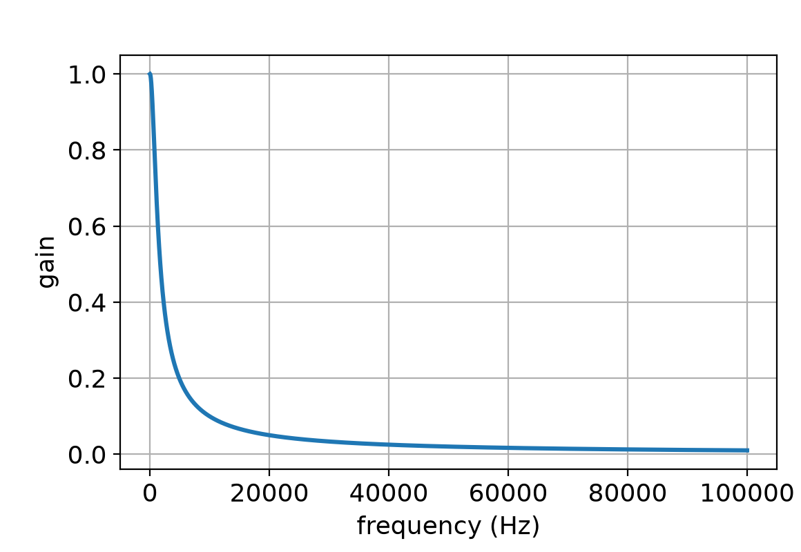
The data is correct, but this plot does not show what the filter does below 1000 Hz.
semilogx Gives Every Power of 10 the Same Widthf = np.linspace(10, 100000, 10000)
gain = 1 / np.sqrt(1 + (f / 1000) ** 2)
fig, ax = plt.subplots()
ax.semilogx(f, gain)
ax.set_xlabel("frequency (Hz)")
ax.set_ylabel("gain")
ax.grid(True)
plt.show()one changed line: plot becomes semilogx. The x axis is now logarithmic.
the step from 10 to 100 has the same width as the step from 100 to 1000
now we see the filter: gain near 1 up to about 200 Hz, 0.71 at 1000 Hz, then it falls
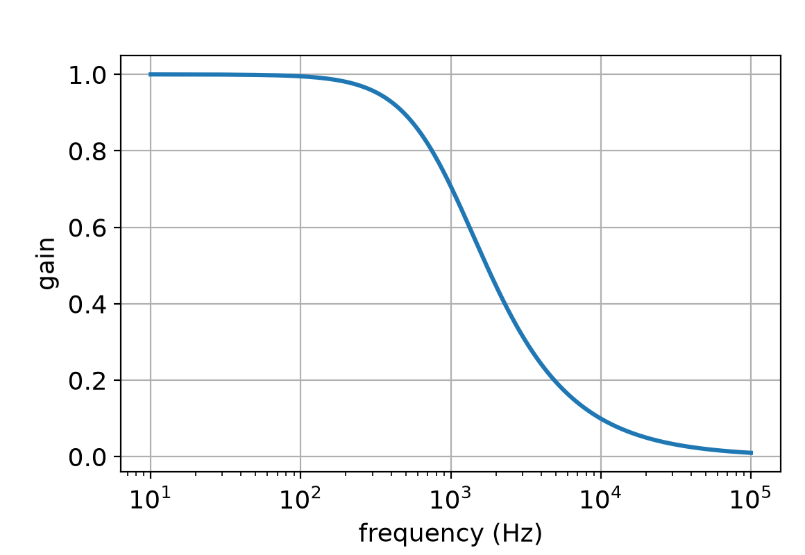
Use a logarithmic axis when the values cover several powers of 10. It cannot show 0 or negative values.
| call | x axis | y axis |
|---|---|---|
ax.plot(x, y) |
linear | linear |
ax.semilogx(x, y) |
log | linear |
ax.semilogy(x, y) |
linear | log |
ax.loglog(x, y) |
log | log |
the four axes show the same arrays f and gain
loglog: above 1000 Hz the curve is a straight line. When the frequency is 10 times larger, the gain is 10 times smaller.
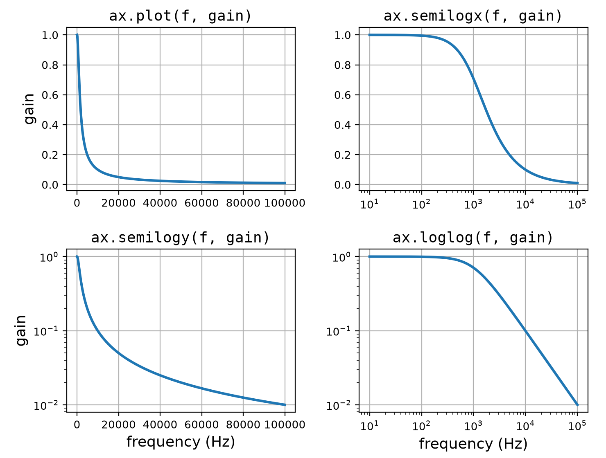
subplots(2, 1) Makes Two Axes in One Figuret = np.linspace(0, 0.04, 200)
volts = 5 * np.sin(2 * np.pi * 50 * t)
milliamps = volts / 100 * 1000
fig, axs = plt.subplots(2, 1)
axs[0].plot(t, volts)
axs[0].set_ylabel("voltage (V)")
axs[1].plot(t, milliamps, color="red")
axs[1].set_ylabel("current (mA)")
axs[1].set_xlabel("time (s)")
plt.show()plt.subplots(2, 1): 2 rows, 1 column. The second result is an array of two axes. We name it axs.
axs[0] is the top axes
axs[1] is the bottom axes. Each axes has its own line, its own labels, and its own scale.
the voltage is in V and the current is in mA: two units, so two axes
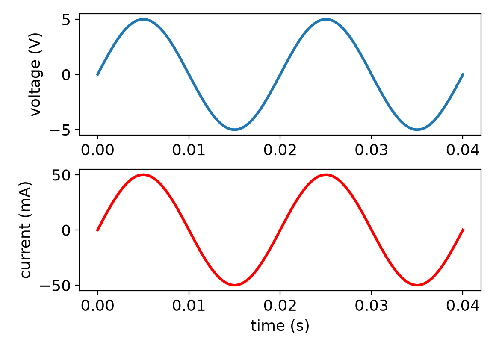
With plt.subplots(2, 2), use two indexes: axs[row, column]. axs[0, 1] is the top right axes.
fig.savefig Writes the Figure to an Image Filesavefig is a method of the figure, not of the axes
the end of the file name chooses the format: .png for documents and slides, .pdf for printing
dpi=200 gives more pixels: the text stays sharp when the image is large
write savefig before plt.show(). The file is written to the folder where the program runs.
In a report, use a saved figure. Do not use a screenshot of the window.
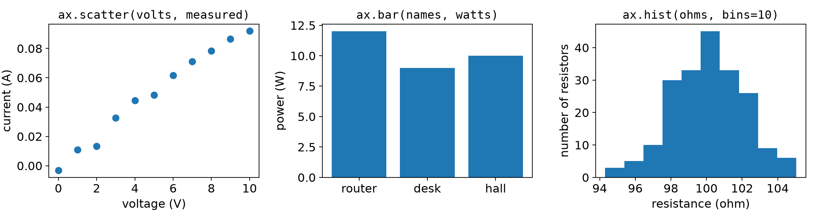
scatter points with no line. Use it for measured values.
bar one bar for each name. Use it to compare a few values.
hist how many values are in each range. Here: 200 resistors.
The steps do not change: plt.subplots(), one call for the data, labels, plt.show(). The data can be lists or arrays.
Write the program that draws this figure.
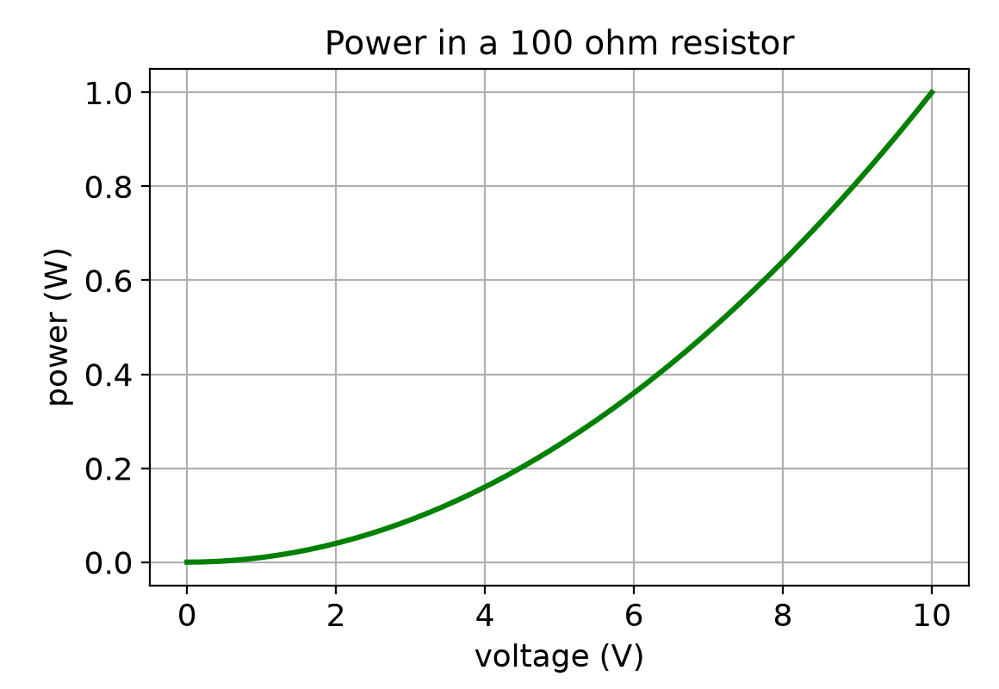
Data: volts has 50 values from 0 to 10. watts = volts ** 2 / 100
import numpy as np
import matplotlib.pyplot as plt
volts = np.linspace(0, 10, 50)
watts = volts ** 2 / 100
fig, ax = plt.subplots()
ax.plot(volts, watts, color="green")
ax.set_title("Power in a 100 ohm resistor")
ax.set_xlabel("voltage (V)")
ax.set_ylabel("power (W)")
ax.grid(True)
plt.show()Why linspace: the task gives the number of points, not the step.
Arrays
np.array, np.arange, np.linspace make arraysnp.sin and np.sqrt, not the math functionsLine plots
fig, ax = plt.subplots(), ax.plot(x, y), plt.show()color, linestyle, marker change the look of a lineMore views
semilogx, semilogy, loglog: for values that cover several powers of 10plt.subplots(rows, columns): several axes in one figurefig.savefig("name.png"): an image file for a reportIn the project, NumPy and Matplotlib are optional. Classes, inheritance, and file input/output come first.